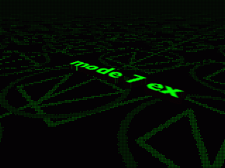

cellosoft.com
Справка: Содержание
cellosoft.com |
|
Добро пожаловать в справку Режима 7! Эта и следующие страницы предназначены для введения и показывают ссылки для расширения Mode 7 Ex для Multimedia Fusion. версия справки: 1.01 для Mode 7 Ex версии 1.01 и более поздних версий Если это ваш первый раз использования расширения Mode 7 Ex, я рекомендую начать с Введения. Если Вы знакомы с предыдущей бета-версией Mode 7 (v0.82b), то Вам следует прочитать Переход из Mode 7 раздел, чтобы понять различия. Содержание: » Контакты и поддержка » Окно настройки и настройки объекта » Действия » Выражения |
|
Mode 7 Ex права © 2000-2002 Marcello Bastéa-Forte и Cellosoft |